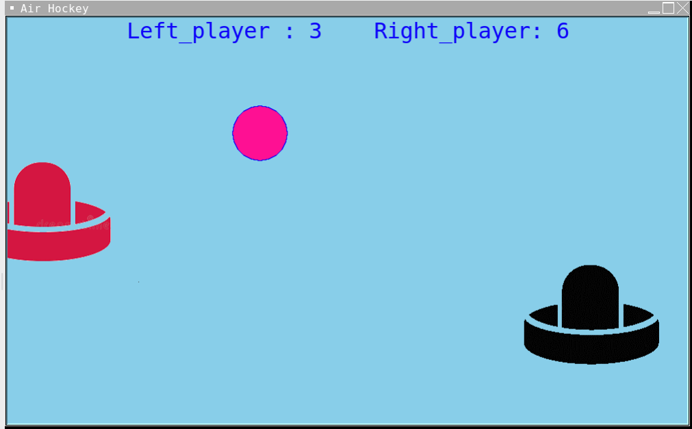
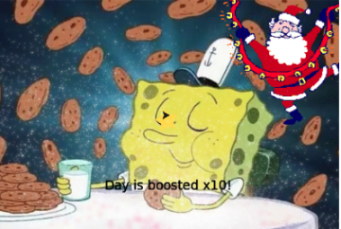
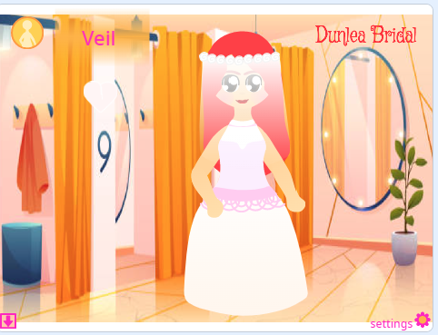
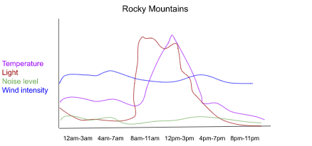
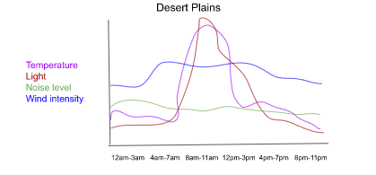
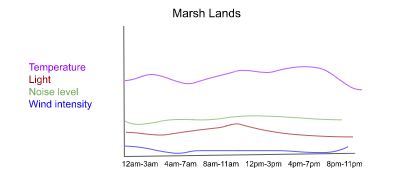
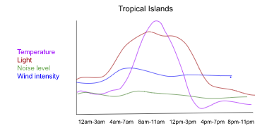
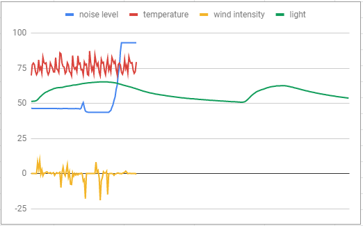

1.1.9 Falling Candy Game

This game allows the user to move a pumpkin from left to right with arrow keys to catch the falling candy. Using turtle's painter and onkeypress methods, we were able to create a Halloween themed background and implement arrow key features for a more interactive game with the user. Additionally, we took what we learned from 1.1.8 and programmed the candy to fall from the sky, using lists and conditional statements.
1.2.5 Air Hockey Game
Using our knowledge from past lessons of lists, abstractions, and variables, we created an interactive game of Air Hockey where users can play by using arrow keys to control their pads and play against an opponent. A scoreboard is displayed at the top to keep track of each player's points.
1.3.1 Santa's Cookies ECard
We created an ECard for a Children's Hospital and implemented user input features, lists, iteration, conditionals, and functions, to allow for a kid-friendly and fun experience for the children viewing our card. There are many colors and silly gifs, as well as music.
Scratch Project: Wedding Dress Up
To create this project, we used several events and procedures to allow users to click through different hairstyles, dresses, etc. to dress up a character for her wedding. We added many costumes and changed the code to incorpoate the new elements.
3.1.6 Rover Phone Home




